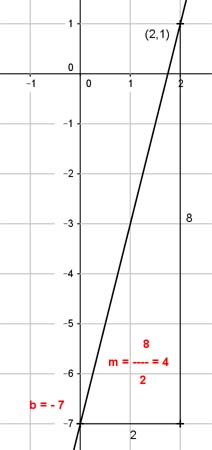

Lineare Funktionen Aufgabe 27 Ermitteln Sie die Gleichung der Geraden, wenn gegeben ist: P(2|1); m = 4 Gesucht ist eine Funktionsgleichung der Form y = mx + b mit der Steigung m und dem Abschnitt b auf der y-Achse. Punktkoordinaten und m in y = mx + b eingesetzt: 1 = 2 * 4 + b |-8 -7 = b y = 4x - 7 